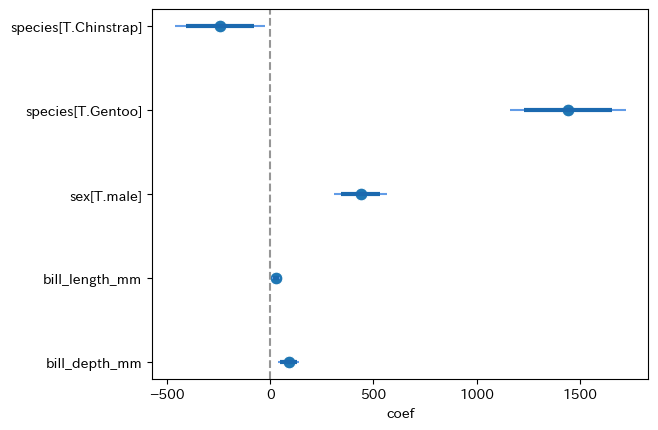

Introduction to Py4Stats
import py4stats as py4stここでは Py4Stats の主な機能を紹介します。実装されている関数の一覧は Function reference を参照してください。
py4stats.eda_tools
探索的データ解析と前処理に関する機能を提供するモジュールです。このモジュールは、複数の DataFrame バックエンドに対して共通の API を提供することを目的として、narwhals ライブラリを用いて実装されています。詳細は Technical Notes: py4stats.eda_tools における narwhals ベースの実装 を参照してください。
py4stats.diagnose()：R言語のdlookr::diagnose()を再現した関数で、データの全般的な状態についての要約を提供します。
import pandas as pd
import numpy as np
from palmerpenguins import load_penguins
penguins = load_penguins() # サンプルデータの読み込み
print(py4st.diagnose(penguins).round(4))
#> dtype missing_count missing_percent unique_count unique_rate
#> species object 0 0.0000 3 0.8721
#> island object 0 0.0000 3 0.8721
#> bill_length_mm float64 2 0.5814 164 47.6744
#> bill_depth_mm float64 2 0.5814 80 23.2558
#> flipper_length_mm float64 2 0.5814 55 15.9884
#> body_mass_g float64 2 0.5814 94 27.3256
#> sex object 11 3.1977 2 0.5814
#> year int64 0 0.0000 3 0.8721py4stats.tabyl()：R言語の janitor::tabyl()を参考にした、クロス集計表を作成する関数です。
print(py4st.tabyl(penguins, 'island', 'species'))
#> species Adelie Chinstrap Gentoo All
#> island
#> Biscoe 44 (26.2%) 0 (0.0%) 124 (73.8%) 168
#> Dream 56 (45.2%) 68 (54.8%) 0 (0.0%) 124
#> Torgersen 52 (100.0%) 0 (0.0%) 0 (0.0%) 52
#> All 152 (44.2%) 68 (19.8%) 124 (36.0%) 344 py4stats.freq_table()：R言語のDescTools::Freq()をオマージュした、1変数の度数分布表を計算する関数。度数 freq と相対度数 perc に加えて、それぞれの累積値を計算します。
print(py4st.freq_table(penguins, 'species'))
#> freq perc cumfreq cumperc
#> species
#> Adelie 152 0.441860 152 0.441860
#> Gentoo 124 0.360465 276 0.802326
#> Chinstrap 68 0.197674 344 1.000000引数 group を指定すると、グループ別の度数分布表を計算できます。
penguins2 = penguins.assign(bill_length_mm2 = pd.cut(penguins['bill_length_mm'], 6))
print(
py4st.freq_table(penguins2, ['species', 'bill_length_mm2'], sort = False)
)
#> freq perc cumfreq cumperc
#> species bill_length_mm2
#> Adelie (32.072, 38.975] 79 0.523179 79 0.523179
#> (38.975, 45.85] 71 0.470199 150 0.993377
#> (45.85, 52.725] 1 0.006623 151 1.000000
#> (52.725, 59.6] 0 0.000000 151 1.000000
#> Chinstrap (32.072, 38.975] 0 0.000000 0 0.000000
#> (38.975, 45.85] 13 0.191176 13 0.191176
#> (45.85, 52.725] 50 0.735294 63 0.926471
#> (52.725, 59.6] 5 0.073529 68 1.000000
#> Gentoo (32.072, 38.975] 0 0.000000 0 0.000000
#> (38.975, 45.85] 40 0.325203 40 0.325203
#> (45.85, 52.725] 78 0.634146 118 0.959350
#> (52.725, 59.6] 5 0.040650 123 1.000000 py4stats.remove_empty()：完全に空白な列や行の削除する関数。R言語の janitor::remove_empty() をオマージュした関数で、全ての要素が NaN である列や行をデータフレームから除外します。
penguins2 = penguins.loc[:, ['species', 'body_mass_g']].copy()
penguins2.loc[:, 'empty'] = np.nan
penguins2.loc[344, :] = np.nan
print(penguins2.tail(3))
#> species body_mass_g empty
#> 342 Chinstrap 4100.0 NaN
#> 343 Chinstrap 3775.0 NaN
#> 344 NaN NaN NaN
# 完全に空白な行と列を削除。
print(py4st.remove_empty(penguins2, quiet = False).tail(3))
#> Removing 1 empty column(s) out of 3 columns(Removed: empty).
#> Removing 1 empty row(s) out of 345 rows(Removed: 344).
#> species body_mass_g
#> 341 Chinstrap 3775.0
#> 342 Chinstrap 4100.0
#> 343 Chinstrap 3775.0
# 完全に空白な列のみ削除。
print(py4st.remove_empty(penguins2, rows = False, quiet = False).tail(3))
#> Removing 1 empty column(s) out of 3 columns(Removed: empty).
#> species body_mass_g
#> 342 Chinstrap 4100.0
#> 343 Chinstrap 3775.0
#> 344 NaN NaN
# 完全に空白な行のみ削除。
print(py4st.remove_empty(penguins2, cols = False, quiet = False).tail(3))
#> Removing 1 empty row(s) out of 345 rows(Removed: 344).
#> species body_mass_g empty
#> 341 Chinstrap 3775.0 NaN
#> 342 Chinstrap 4100.0 NaN
#> 343 Chinstrap 3775.0 NaN py4stats.remove_constant()：定数列の削除。R言語の janitor::remove_constant() をオマージュした関数で、1種類だけの要素からなる列をデータフレームから除外します。
penguins2 = penguins.loc[:, ['species', 'body_mass_g']].copy()
penguins2.loc[:, 'constant'] = 'c'
print(penguins2.head(3))
#> species body_mass_g constant
#> 0 Adelie 3750.0 c
#> 1 Adelie 3800.0 c
#> 2 Adelie 3250.0 c
print(py4st.remove_constant(penguins2, quiet = False).head(3))
#> Removing 1 constant column(s) out of 3 column(s)(Removed: constant).
#> species body_mass_g
#> 0 Adelie 3750.0
#> 1 Adelie 3800.0
#> 2 Adelie 3250.0py4stats.filtering_out()：列名に特定の文字列を含む列や、特定の文字列で始まる/終わる列を除外します。実装の一部はR言語の dplyr::select() を参考にしました。
# 列名に 'length' を含む列を除外
print(py4st.filtering_out(penguins, contains = 'length').head(3))
#> species island bill_depth_mm body_mass_g sex year female
#> 0 Adelie Torgersen 18.7 3750.0 male 2007 0
#> 1 Adelie Torgersen 17.4 3800.0 female 2007 1
#> 2 Adelie Torgersen 18.0 3250.0 female 2007 1
# 列名が 'bill' から始まる列を除外
print(py4st.filtering_out(penguins, starts_with = 'bill').head(3))
#> species island flipper_length_mm body_mass_g sex year female
#> 0 Adelie Torgersen 181.0 3750.0 male 2007 0
#> 1 Adelie Torgersen 186.0 3800.0 female 2007 1
#> 2 Adelie Torgersen 195.0 3250.0 female 2007 1
# 列名が '_mm' で終わる列を除外
print(py4st.filtering_out(penguins, ends_with = '_mm').head(3))
#> species island body_mass_g sex year female
#> 0 Adelie Torgersen 3750.0 male 2007 0
#> 1 Adelie Torgersen 3800.0 female 2007 1
#> 2 Adelie Torgersen 3250.0 female 2007 1py4stats.review_wrangling():データ前処理（wrangling）による変更点をレビュー形式で要約して、文字列として出力する関数です。データフレームの形状（行数・列数）の変化に加えて、データ型（dtype）の変化欠測値やカテゴリー変数における水準の増減を報告します。
gentoo = penguins.query("species == 'Gentoo'")
print(py4st.review_wrangling(penguins, gentoo))
#> ========================= Review of wrangling ==========================
#> The shape of DataFrame:
#> Rows: before 344 -> after 124 (-220)
#> Cols: before 8 -> after 8 (No change)
#>
#> No columns were added or removed.
#>
#> No existing columns had their type changed.
#>
#> Increase in missing values:
#> bill_length_mm before 2 (0.58%) -> after 1 (0.81%)
#> bill_depth_mm before 2 (0.58%) -> after 1 (0.81%)
#> flipper_length_mm before 2 (0.58%) -> after 1 (0.81%)
#> body_mass_g before 2 (0.58%) -> after 1 (0.81%)
#> sex before 11 (3.20%) -> after 5 (4.03%)
#>
#> None of the existing columns decreases in the number of missing values.
#>
#> The following columns show changes in categories:
#> species:
#> addition: None
#> removal: 'Adelie' and 'Chinstrap'
#> island:
#> addition: None
#> removal: 'Torgersen' and 'Dream'
#> ========================================================================デフォルト設定ではレビュー項目に含まれませんが、items = 'numeric' を指定すると、ASCII 文字列の箱ひげ図を使って数値変数の分布の変化を確認することができます。
print(py4st.review_wrangling(penguins, gentoo, items = 'numeric'))
#> =================== Review of wrangling ====================
#> Boxplot of Numeric values (for reference):
#> bill_length_mm
#> before: 32.10|------======:====-----------| 59.60
#> after: 40.90 |---===:==----------| 59.60
#> bill_depth_mm
#> before: 13.10|-------======:=====---------| 21.50
#> after: 13.10|--===:==-----| 17.30
#> flipper_length_mm
#> before: 172.00|-------====:========--------| 231.00
#> after: 203.00 |---==:===----| 231.00
#> body_mass_g
#> before: 2,700.00|-----====:======------------|6,300.00
#> after: 3,950.00 |-----==:====------|6,300.00
#> year
#> before: 2,007.00|=============:==============|2,009.00
#> after: 2,007.00|=============:==============|2,009.00
#> ============================================================py4stats.regression_tools
py4stats.regression_tools は statsmodelsライブラリで作成された回帰分析の結果についての表作成と可視化を補助する機能を提供するモジュールです。
py4stats.compare_ols() ：計量経済学の実証論文でよく用いられる、回帰分析の結果を列方向に並べて比較する表を作成します。表のフォーマットについてはR言語のtexreg::screenreg()やmodelsummary::modelsummary()を参考にしています。同種の機能を提供する Python ライブラリーとしては、R言語の stargazer パッケージをもとにした stargazer ライブラリがあります。
import statsmodels.formula.api as smf
# 回帰分析の実行
fit1 = smf.ols('body_mass_g ~ bill_length_mm + species', data = penguins).fit()
fit2 = smf.ols('body_mass_g ~ bill_length_mm + bill_depth_mm + species', data = penguins).fit()
fit3 = smf.ols('body_mass_g ~ bill_length_mm + bill_depth_mm + species + sex', data = penguins).fit()
compare_tab1 = py4st.compare_ols(list_models = [fit1, fit2, fit3]) # 表の作成
compare_tab1| term | model 1 | model 2 | model 3 |
|---|---|---|---|
| Intercept | 153.7397 | -1,742.7202 *** | 843.9812 ** |
| (268.9012) | (313.7697) | (403.5956) | |
| species[T.Chinstrap] | -885.8121 *** | -539.6864 *** | -245.1516 *** |
| (88.2502) | (86.9425) | (84.5952) | |
| species[T.Gentoo] | 578.6292 *** | 1,492.8283 *** | 1,443.3525 *** |
| (75.3623) | (118.4442) | (107.7844) | |
| bill_length_mm | 91.4358 *** | 55.6461 *** | 26.5366 *** |
| (6.8871) | (7.2326) | (7.2436) | |
| bill_depth_mm | 179.0434 *** | 87.9328 *** | |
| (19.0997) | (20.2192) | ||
| sex[T.male] | 437.2007 *** | ||
| (49.1098) | |||
| rsquared_adj | 0.7810 | 0.8258 | 0.8613 |
| nobs | 342 | 342 | 333 |
| df | 3 | 4 | 5 |
py4stats.compare_ols() の実行結果は Pandas の DataFrame として出力されるため、.xlsx. ファイルなどに変換することができます。また、用途に応じて表の体裁を調整できるようにしています。詳細については 「回帰分析の比較」 を参照してください。
compare_tab2 = py4st.compare_ols(
list_models = [fit1, fit2, fit3],
model_name = ['基本モデル', '嘴の高さ追加', '性別追加'], # モデル名を変更
stats = 'p_value', # () 内の値をP-値に変更する
add_stars = False, # 有意性のアスタリスクなし
table_style = 'one_line', # 表スタイルを1行表示に設定 'one' でも可能
digits = 3 # 小数点以下の桁数を3に設定
)
compare_tab2| term | 基本モデル | 嘴の高さ追加 | 性別追加 |
|---|---|---|---|
| Intercept | 153.740(0.568) | -1,742.720(0.000) | 843.981(0.037) |
| species[T.Chinstrap] | -885.812(0.000) | -539.686(0.000) | -245.152(0.004) |
| species[T.Gentoo] | 578.629(0.000) | 1,492.828(0.000) | 1,443.353(0.000) |
| bill_length_mm | 91.436(0.000) | 55.646(0.000) | 26.537(0.000) |
| bill_depth_mm | 179.043(0.000) | 87.933(0.000) | |
| sex[T.male] | 437.201(0.000) | ||
| rsquared_adj | 0.781 | 0.826 | 0.861 |
| nobs | 342 | 342 | 333 |
| df | 3 | 4 | 5 |
py4stats.coefplot()：回帰係数の可視化。R言語の coefplot::coefplot() を参考にしました。
import matplotlib.pyplot as plt
py4st.coefplot(fit3)
plt.rcParams["figure.autolayout"] = True
fig, ax = plt.subplots(1, 2, figsize = (2.2 * 5, 5), dpi = 100)
py4st.coefplot(fit2, ax = ax[0])
ax[0].set_xlim(-900, 1800)
py4st.coefplot(fit3, ax = ax[1], palette = ['#FF6F91', '#F2E5EB'])
ax[1].set_xlim(-900, 1800);
py4stats.compare_mfx() と py4stats.mfxplot() は、それぞれ py4stats.compare_ols() と py4stats.coefplot() の一般化線型モデルバージョンです。statsmodels ライブラリの.get_margeff() メソッドから得られた限界効果の推定値を表示します。
penguins['female'] = np.where(penguins['sex'] == 'female', 1, 0)
# ロジスティック回帰の実行
fit_logit1 = smf.logit('female ~ body_mass_g + bill_length_mm + bill_depth_mm', data = penguins).fit()
fit_logit2 = smf.logit('female ~ body_mass_g + bill_length_mm + bill_depth_mm + species', data = penguins).fit()
py4st.compare_mfx([fit_logit1, fit_logit2])| term | model 1 | model 2 |
|---|---|---|
| body_mass_g | -0.0004 *** | -0.0003 *** |
| (0.0000) | (0.0000) | |
| bill_length_mm | -0.0053 | -0.0357 *** |
| (0.0036) | (0.0070) | |
| bill_depth_mm | -0.1490 *** | -0.1098 *** |
| (0.0051) | (0.0175) | |
| species[T.Chinstrap] | 0.4172 *** | |
| (0.0848) | ||
| species[T.Gentoo] | 0.3527 *** | |
| (0.1308) | ||
| prsquared | 0.5647 | 0.6187 |
| nobs | 342 | 342 |
| df | 3 | 5 |
plt.rcParams["figure.autolayout"] = True
fig, ax = plt.subplots(1, 2, figsize = (2.2 * 5, 5), dpi = 100)
py4st.mfxplot(fit_logit1, ax = ax[0])
ax[0].set_xlim(-0.2, 0.85)
py4st.mfxplot(fit_logit2, ax = ax[1], palette = ['#FF6F91', '#F2E5EB'])
ax[1].set_xlim(-0.2, 0.85);